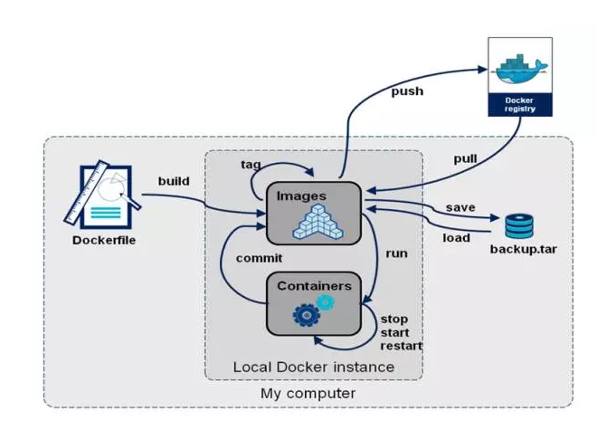

[Go] Docker镜像构建与推送到Harbor
[TOC]
Harbor
Harbor的定位可以看以下Docker Container的生命周期图  而Harbor的作用就是让企业可以搭建私有的Docker Registry，以方便镜像管理。通过helm工具还能与k8s打通，实现高效的DevOps。
DockerFile
FROM alpine:3.2
LABEL maintainer "<raymond_2008@yahoo.com>"
RUN mkdir -p /data/tk8s
RUN cp conf /data/tk8s
COPY tk8s /data/tk8s/tk8s
RUN chmod a+x /data/tk8s/tk8s
USER nobody
EXPOSE 8080
WORKDIR /data/tk8s
ENTRYPOINT ["/data/tk8s/tk8s"]
CMD []
构建
# 进入工程目录
$ cd $GOPATH/src/tk8s
# 构建镜像
$ docker build -t="test_go_k8s:1.0.0" ./ # 指定镜像名称为 test_go_k8s Tag为 1.0.0
# 测试镜像
$ docker run -p 8080:8080 test_go_k8s # 启动本地镜像
# 访问查看
$ curl localhost:8080 # 访问测试
推送到harbor
创建项目
若已创建了项目,请忽略本步骤
- 1 登陆harbor后台
- 2 创建项目
- 3 获取标记镜像和推送的指令
- 1 标记: docker tag {SOURCE_IMAGE}[:TAG] {Harbor_host}/{project_name}/IMAGE[:TAG]
- 2 推送: docker push {Harbor_HOST}/{project_name}/IMAGE[:TAG]
本地推送
回到镜像源机器上
# 登陆harbor
$ docker login -u XXX -p XXX {Harbor_HOST}
Login Succeeded
# 标记镜像
$ docker tag test_go_k8s:1.0.0 {Harbor_host}/{project_name}/test_go_k8s:1.0.0
# 推送
$ docker push {Harbor_HOST}/{project_name}/IMAGE[:TAG]
回到Harbor后台,我们可以看到镜像已上传成功。

注意事项
账户权限
Harbor支持基于RBAC的权限,因此需要进行镜像推送的时候,注意在docker客户端登陆时候使用的账户需要为项目管理员或开发人员。
项目创建
在推送前请先创建项目,通俗理解就是github的repo。
传输问题
注意docker访问时候的内外网代理问题,确保docker login成功
系列阅读
- [Go Api服务构建]()
- [Go Docker镜像构建与推送到Harbor]()
- [Go helm+k8s部署Go应用]()
- [Go Gitlab CI + Harbor实现自动化构建]()